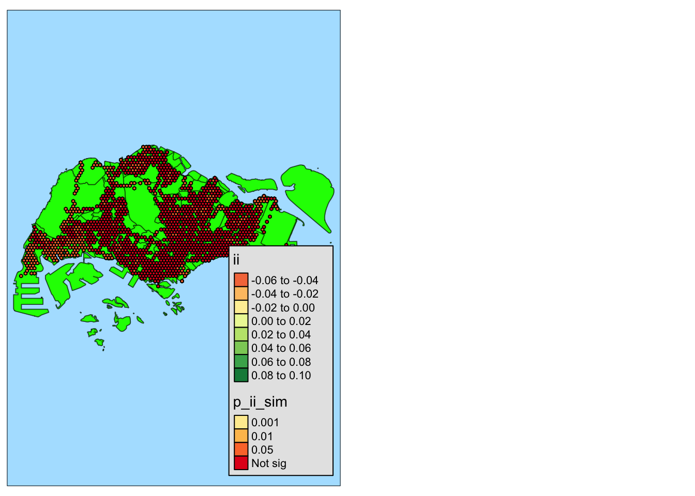

pacman::p_load(sf, sfdep, tmap, tidyverse, knitr)Take Home Exercise 1C: Spatial Analysis with LISA
Overview
The aim of this study is to uncover spatial and spatio-temporal mobility patterns of public bus passengers in Singapore.
The main modes of analysis to be used here are Local Indicators of Spatial Association (GLISA) and Emerging Hot Spot Analysis (EHSA).
In doing these study, we will be looking at bus trips started during the hours below.
| Peak hour period | Bus tap on time |
|---|---|
| Weekday morning peak | 6am to 9am |
| Weekday evening peak | 5pm to 8pm |
| Weekend/holiday morning peak | 11am to 2pm |
| Weekend/holiday evening peak | 4pm to 7pm |
More details about the study can be found here.
In this part of the study, we will do spatial analysis with LISA using bus commuter traffic data generated from Data Wrangling. We will also attempt the answer the Open Questions from Geovisualization and Analysis:
Which areas are busier on weekends? on weekdays?
What are the commuting patterns of people during weekdays? weekends?
Setup
Setting Up the R Environment
We will load the following R packages needed for this study.
tmap: for thematic mapping
sf: for geospatial data handling
tidyverse: for non-spatial data handling
sfdep: for spatial analysis
knitr:for prettifying presentation
Environment settings
We will also set the default settings on for this document
tmap_styleto natural: for displaying the maps with preferred styleset seed for reproducibility of results
tmap_style("natural")
set.seed(1234)Loading the data
Important
Before running this part, please run all the code chunks in Data Wrangling as it generates the data needed for this document.
Use read_rds() to load the rds data needed for geovisualization and analysis.
sg_honeycomb <- read_rds("data/rds/sg_honeycomb_with_num_busstops.rds")
bus_peaks_hc <- read_rds("data/rds/bus_peaks_hc202310.rds") %>%
filter(NUM_BUS_STOPS > 0)sg_honeycomb- contains the honeycomb grid that covers Singapore boundariesbus_peaks_hc- bus commuter traffic data for peak times for October 2023
Important
As mentioned in Geovisualization and Analysis, we are only focusing on October 2023 data as we observed the same patterns in the August and September.
Methodology
Local Indicator of Spatial Association (LISA) detects spatial clusters present in our geospatial data and also helps identify spatial outliers.
We will use this analysis method to identify which areas have the highest bus commuters and which ones have the least.
To perform a LISA Analysis, we will do the following:
Deriving contiguity weights using Queen’s method
Computing global Moran’s I
Computing local Moran’s I
Visualizing local Moran’s I and p-value
Visualizing LISA Map
Interpreting the results
We will do this analysis for the all the peak hours.
Important
For all analysis in this study, we will set the significance level, or \(\alpha\) value to 0.05.
Deriving contiguity weights using Queens’ method
Before getting Moran’s I, we need to get the contiguity weights first. We will use the Queen’s method.
Note
As our cells are hexagons, they touch the neighbors via edges, not single points. Hence, both Rook and Queen’s method will return the same results.
We will use st_contiguity() and st_contiguity() to get the contiguity weights. We will set allow_zero = TRUE as we have island hexagons in our data set.
wm_q <-
bus_peaks_hc %>%
mutate(
nb = st_contiguity(geometry),
wt = st_weights(nb,
style = "W",
allow_zero = TRUE)
)
glimpse(wm_q)Rows: 1,519
Columns: 9
$ HEXAGON_ID <int> 48, 70, 82, 84, 85, 94, 95, 96, 97, 98, 110, 112, 113…
$ NUM_BUS_STOPS <int> 1, 1, 2, 1, 1, 1, 3, 2, 1, 1, 1, 1, 1, 2, 1, 2, 1, 1,…
$ WEEKDAY_AM_TRIPS <dbl> 93, 73, 185, 265, 43, 54, 1268, 935, 50, 395, 143, 15…
$ WEEKDAY_PM_TRIPS <dbl> 384, 263, 1812, 259, 211, 259, 2633, 1995, 344, 85, 5…
$ WEEKEND_AM_TRIPS <dbl> 0, 41, 154, 75, 56, 18, 358, 547, 36, 22, 36, 824, 5,…
$ WEEKEND_PM_TRIPS <dbl> 42, 89, 275, 94, 42, 41, 622, 814, 48, 105, 63, 1064,…
$ geometry <POLYGON [m]> POLYGON ((3917.538 28017.41..., POLYGON ((441…
$ nb <nb> 0, <4, 5, 8>, 6, <2, 7, 8>, <2, 8, 9, 12>, <3, 11>, <4…
$ wt <list> <NULL>, <0.3333333, 0.3333333, 0.3333333>, 1, <0.333…Calculating global Moran’s I
To check for signs of clustering, we will first calculate the global Moran’s I value.
When \(I > 0\), observations are similar (sign of clustering)
When \(I < 0\), observations are dissimilar (low indication of clustering)
If \(p < \alpha\) (0.05), the result is significant and did not happen by chance
We will do this for all peak times.
To perform the permutation test, we will use global_moran_perm().
global_moran_perm(
wm_q$WEEKDAY_AM_TRIPS,
wm_q$nb,
wm_q$wt,
nsim = 99,
zero.policy = TRUE
)
Monte-Carlo simulation of Moran I
data: x
weights: listw
number of simulations + 1: 100
statistic = 0.23237, observed rank = 100, p-value < 2.2e-16
alternative hypothesis: two.sided\(0.23237 > 0\) means there are signs of clustering
\(p-value < 2.2\times10^{-16} < 0.05\) means the result is significant
Conclusion: There are signs of geospatial clusters in the data.
global_moran_perm(
wm_q$WEEKDAY_PM_TRIPS,
wm_q$nb,
wm_q$wt,
nsim = 99,
zero.policy = TRUE
)
Monte-Carlo simulation of Moran I
data: x
weights: listw
number of simulations + 1: 100
statistic = 0.06418, observed rank = 100, p-value < 2.2e-16
alternative hypothesis: two.sided\(0.06418 > 0\) means there are signs of clustering
\(p-value < 2.2\times10^{-16} < 0.05\) means the result is significant
Conclusion: There are signs of geospatial clusters in the data.
global_moran_perm(
wm_q$WEEKEND_AM_TRIPS,
wm_q$nb,
wm_q$wt,
nsim = 99,
zero.policy = TRUE
)
Monte-Carlo simulation of Moran I
data: x
weights: listw
number of simulations + 1: 100
statistic = 0.17209, observed rank = 100, p-value < 2.2e-16
alternative hypothesis: two.sided\(0.17209 > 0\) means there are signs of clustering
\(p-value < 2.2\times10^{-16} < 0.05\) means the result is significant
Conclusion: There are signs of geospatial clusters in the data.
global_moran_perm(
wm_q$WEEKEND_PM_TRIPS,
wm_q$nb,
wm_q$wt,
nsim = 99,
zero.policy = TRUE
)
Monte-Carlo simulation of Moran I
data: x
weights: listw
number of simulations + 1: 100
statistic = 0.11845, observed rank = 100, p-value < 2.2e-16
alternative hypothesis: two.sided\(0.11845 > 0\) means there are signs of clustering
\(p-value < 2.2\times10^{-16} < 0.05\) means the result is significant
Conclusion: There are signs of geospatial clusters in the data.
Calculating local Moran’s I
Now that we have identified signs of clustering, we will identify where those clusters are.
We will do this for all peak times as clusters where detected for all
Before running the permutation test, we must set the seed first:
set.seed(1234)To perform the permutation test, we will use global_moran_perm(). We need to set zero.policy = TRUE as there are island hexagons in our data.
lisa_weekday_am <- wm_q %>%
mutate(local_moran = local_moran(
WEEKDAY_AM_TRIPS, nb, wt, nsim = 99, zero.policy = TRUE),
.before = 1) %>%
unnest(local_moran)
kable(head(lisa_weekday_am))| ii | eii | var_ii | z_ii | p_ii | p_ii_sim | p_folded_sim | skewness | kurtosis | mean | median | pysal | HEXAGON_ID | NUM_BUS_STOPS | WEEKDAY_AM_TRIPS | WEEKDAY_PM_TRIPS | WEEKEND_AM_TRIPS | WEEKEND_PM_TRIPS | geometry | nb | wt |
|---|---|---|---|---|---|---|---|---|---|---|---|---|---|---|---|---|---|---|---|---|
| 0.0000000 | NA | NA | NA | NA | NA | NA | NA | NA | Low-Low | Low-Low | Low-Low | 48 | 1 | 93 | 384 | 0 | 42 | POLYGON ((3917.538 28017.41… | 0 | NULL |
| 0.3629677 | -0.0047783 | 0.1104989 | 1.1062899 | 0.2686010 | 0.06 | 0.03 | -1.897223 | 4.9999911 | Low-Low | Low-Low | Low-Low | 70 | 1 | 73 | 263 | 41 | 89 | POLYGON ((4417.538 30615.49… | 4, 5, 8 | 0.3333333, 0.3333333, 0.3333333 |
| 0.3696953 | 0.0502917 | 0.2420379 | 0.6492294 | 0.5161901 | 0.18 | 0.09 | -3.202394 | 15.3993505 | Low-Low | Low-Low | Low-Low | 82 | 2 | 185 | 1812 | 154 | 275 | POLYGON ((4667.538 28450.43… | 6 | 1 |
| 0.3486887 | -0.0225795 | 0.1768984 | 0.8827258 | 0.3773845 | 0.12 | 0.06 | -3.273004 | 16.7251919 | Low-Low | Low-Low | Low-Low | 84 | 1 | 265 | 259 | 75 | 94 | POLYGON ((4667.538 30182.48… | 2, 7, 8 | 0.3333333, 0.3333333, 0.3333333 |
| 0.3573719 | 0.0417333 | 0.0521348 | 1.3823766 | 0.1668561 | 0.04 | 0.02 | -1.044111 | 0.7061863 | Low-Low | Low-Low | Low-Low | 85 | 1 | 43 | 211 | 56 | 42 | POLYGON ((4667.538 31048.5,… | 2, 8, 9, 12 | 0.25, 0.25, 0.25, 0.25 |
| 0.3702654 | -0.0010197 | 0.1367820 | 1.0039060 | 0.3154239 | 0.10 | 0.05 | -1.544507 | 2.8607848 | Low-Low | Low-Low | Low-Low | 94 | 1 | 54 | 259 | 18 | 41 | POLYGON ((4917.538 28883.44… | 3, 11 | 0.5, 0.5 |
lisa_weekday_pm <- wm_q %>%
mutate(local_moran = local_moran(
WEEKDAY_PM_TRIPS, nb, wt, nsim = 99, zero.policy = TRUE),
.before = 1) %>%
unnest(local_moran)
kable(head(lisa_weekday_pm))| ii | eii | var_ii | z_ii | p_ii | p_ii_sim | p_folded_sim | skewness | kurtosis | mean | median | pysal | HEXAGON_ID | NUM_BUS_STOPS | WEEKDAY_AM_TRIPS | WEEKDAY_PM_TRIPS | WEEKEND_AM_TRIPS | WEEKEND_PM_TRIPS | geometry | nb | wt |
|---|---|---|---|---|---|---|---|---|---|---|---|---|---|---|---|---|---|---|---|---|
| 0.0000000 | NA | NA | NA | NA | NA | NA | NA | NA | Low-Low | Low-Low | Low-Low | 48 | 1 | 93 | 384 | 0 | 42 | POLYGON ((3917.538 28017.41… | 0 | NULL |
| 0.2029408 | -0.0133949 | 0.0654765 | 0.8454449 | 0.3978625 | 0.04 | 0.02 | -2.995133 | 10.66000 | Low-Low | Low-Low | Low-Low | 70 | 1 | 73 | 263 | 41 | 89 | POLYGON ((4417.538 30615.49… | 4, 5, 8 | 0.3333333, 0.3333333, 0.3333333 |
| 0.1873929 | -0.0533844 | 0.4717347 | 0.3505634 | 0.7259159 | 0.14 | 0.07 | -6.733234 | 52.48787 | Low-Low | Low-Low | Low-Low | 82 | 2 | 185 | 1812 | 154 | 275 | POLYGON ((4667.538 28450.43… | 6 | 1 |
| 0.1902561 | -0.0084096 | 0.1048145 | 0.6136377 | 0.5394548 | 0.08 | 0.04 | -4.979333 | 28.40620 | Low-Low | Low-Low | Low-Low | 84 | 1 | 265 | 259 | 75 | 94 | POLYGON ((4667.538 30182.48… | 2, 7, 8 | 0.3333333, 0.3333333, 0.3333333 |
| 0.2006681 | -0.0106624 | 0.0614515 | 0.8525028 | 0.3939351 | 0.02 | 0.01 | -4.405853 | 24.39884 | Low-Low | Low-Low | Low-Low | 85 | 1 | 43 | 211 | 56 | 42 | POLYGON ((4667.538 31048.5,… | 2, 8, 9, 12 | 0.25, 0.25, 0.25, 0.25 |
| 0.1976531 | -0.0015011 | 0.1975444 | 0.4480816 | 0.6540943 | 0.18 | 0.09 | -5.541946 | 34.26504 | Low-Low | Low-Low | Low-Low | 94 | 1 | 54 | 259 | 18 | 41 | POLYGON ((4917.538 28883.44… | 3, 11 | 0.5, 0.5 |
lisa_weekend_am <- wm_q %>%
mutate(local_moran = local_moran(
WEEKEND_AM_TRIPS, nb, wt, nsim = 99, zero.policy = TRUE),
.before = 1) %>%
unnest(local_moran)
kable(head(lisa_weekend_am))| ii | eii | var_ii | z_ii | p_ii | p_ii_sim | p_folded_sim | skewness | kurtosis | mean | median | pysal | HEXAGON_ID | NUM_BUS_STOPS | WEEKDAY_AM_TRIPS | WEEKDAY_PM_TRIPS | WEEKEND_AM_TRIPS | WEEKEND_PM_TRIPS | geometry | nb | wt |
|---|---|---|---|---|---|---|---|---|---|---|---|---|---|---|---|---|---|---|---|---|
| 0.0000000 | NA | NA | NA | NA | NA | NA | NA | NA | Low-Low | Low-Low | Low-Low | 48 | 1 | 93 | 384 | 0 | 42 | POLYGON ((3917.538 28017.41… | 0 | NULL |
| 0.3076317 | -0.0444053 | 0.1047280 | 1.0878197 | 0.2766747 | 0.04 | 0.02 | -2.0441152 | 5.0601555 | Low-Low | Low-Low | Low-Low | 70 | 1 | 73 | 263 | 41 | 89 | POLYGON ((4417.538 30615.49… | 4, 5, 8 | 0.3333333, 0.3333333, 0.3333333 |
| 0.3156718 | -0.0318436 | 0.1738723 | 0.8334101 | 0.4046135 | 0.12 | 0.06 | -1.9392076 | 4.3376603 | Low-Low | Low-Low | Low-Low | 82 | 2 | 185 | 1812 | 154 | 275 | POLYGON ((4667.538 28450.43… | 6 | 1 |
| 0.2973275 | -0.0361015 | 0.1909185 | 0.7630963 | 0.4454060 | 0.12 | 0.06 | -2.6001436 | 7.1051552 | Low-Low | Low-Low | Low-Low | 84 | 1 | 265 | 259 | 75 | 94 | POLYGON ((4667.538 30182.48… | 2, 7, 8 | 0.3333333, 0.3333333, 0.3333333 |
| 0.2948676 | 0.0362579 | 0.0368321 | 1.3475079 | 0.1778167 | 0.10 | 0.05 | -0.8826949 | 0.3960311 | Low-Low | Low-Low | Low-Low | 85 | 1 | 43 | 211 | 56 | 42 | POLYGON ((4667.538 31048.5,… | 2, 8, 9, 12 | 0.25, 0.25, 0.25, 0.25 |
| 0.3207318 | -0.0373200 | 0.3308401 | 0.6224965 | 0.5336155 | 0.10 | 0.05 | -3.9906452 | 17.6247670 | Low-Low | Low-Low | Low-Low | 94 | 1 | 54 | 259 | 18 | 41 | POLYGON ((4917.538 28883.44… | 3, 11 | 0.5, 0.5 |
lisa_weekend_pm <- wm_q %>%
mutate(local_moran = local_moran(
WEEKEND_PM_TRIPS, nb, wt, nsim = 99, zero.policy = TRUE),
.before = 1) %>%
unnest(local_moran)
kable(head(lisa_weekend_pm))| ii | eii | var_ii | z_ii | p_ii | p_ii_sim | p_folded_sim | skewness | kurtosis | mean | median | pysal | HEXAGON_ID | NUM_BUS_STOPS | WEEKDAY_AM_TRIPS | WEEKDAY_PM_TRIPS | WEEKEND_AM_TRIPS | WEEKEND_PM_TRIPS | geometry | nb | wt |
|---|---|---|---|---|---|---|---|---|---|---|---|---|---|---|---|---|---|---|---|---|
| 0.0000000 | NA | NA | NA | NA | NA | NA | NA | NA | Low-Low | Low-Low | Low-Low | 48 | 1 | 93 | 384 | 0 | 42 | POLYGON ((3917.538 28017.41… | 0 | NULL |
| 0.2117808 | 0.0452422 | 0.0467796 | 0.7699928 | 0.4413042 | 0.06 | 0.03 | -4.632708 | 27.674860 | Low-Low | Low-Low | Low-Low | 70 | 1 | 73 | 263 | 41 | 89 | POLYGON ((4417.538 30615.49… | 4, 5, 8 | 0.3333333, 0.3333333, 0.3333333 |
| 0.2170098 | -0.0049863 | 0.2376471 | 0.4553855 | 0.6488320 | 0.12 | 0.06 | -5.211629 | 31.608515 | Low-Low | Low-Low | Low-Low | 82 | 2 | 185 | 1812 | 154 | 275 | POLYGON ((4667.538 28450.43… | 6 | 1 |
| 0.2000335 | -0.0008545 | 0.1140243 | 0.5949154 | 0.5519000 | 0.24 | 0.12 | -4.955942 | 27.868140 | Low-Low | Low-Low | Low-Low | 84 | 1 | 265 | 259 | 75 | 94 | POLYGON ((4667.538 30182.48… | 2, 7, 8 | 0.3333333, 0.3333333, 0.3333333 |
| 0.2030793 | 0.0057779 | 0.0599308 | 0.8059444 | 0.4202749 | 0.10 | 0.05 | -3.479865 | 16.733130 | Low-Low | Low-Low | Low-Low | 85 | 1 | 43 | 211 | 56 | 42 | POLYGON ((4667.538 31048.5,… | 2, 8, 9, 12 | 0.25, 0.25, 0.25, 0.25 |
| 0.2234404 | -0.0120145 | 0.0809842 | 0.8273850 | 0.4080189 | 0.06 | 0.03 | -2.703362 | 9.281363 | Low-Low | Low-Low | Low-Low | 94 | 1 | 54 | 259 | 18 | 41 | POLYGON ((4917.538 28883.44… | 3, 11 | 0.5, 0.5 |
Plotting local Moran’s I and p-value
Next we will plot the local Moran’s I values and p-values to gain insights.
Show the code
ii_map <-
tm_shape(sg_honeycomb) +
tm_fill(col="white") +
tm_shape(lisa_weekday_am) +
tm_fill("ii") +
tm_borders(alpha = 0.5) +
tm_layout(main.title = "local Moran's I of WEEKDAY_AM_TRIPS",
main.title.size = 0.8)
p_ii_sim_map <-
tm_shape(sg_honeycomb) +
tm_fill(col="white") +
tm_shape(lisa_weekday_am) +
tm_fill("p_ii_sim",
breaks = c(0, 0.001, 0.01, 0.05, 1),
labels = c("0.001", "0.01", "0.05", "Not sig"),
palette = "YlOrRd"
) +
tm_borders(alpha = 0.5) +
tm_layout(main.title = "p-value of local Moran's I",
main.title.size = 0.8)
tmap_arrange(ii_map, p_ii_sim_map, ncol = 2)
Most of the map is covered by dark reds, corresponding to insignificant values. However, we can see the biggest cluster of lighter hexagons on the West part. Some lighter clusters were also seen in the map.
This peak time also has the widest range of ii values (-5 to 25), indicating that values are farthest from each other.
Plotting the LISA map later would reveal where the clusters are located based on WEEKDAY_AM_TRIPS.
Show the code
ii_map <-
tm_shape(sg_honeycomb) +
tm_fill(col="white") +
tm_shape(lisa_weekday_pm) +
tm_fill("ii") +
tm_borders(alpha = 0.5) +
tm_layout(main.title = "local Moran's I of WEEKDAY_PM_TRIPS",
main.title.size = 0.8)
p_ii_sim_map <-
tm_shape(sg_honeycomb) +
tm_fill(col="white") +
tm_shape(lisa_weekday_pm) +
tm_fill("p_ii_sim",
breaks = c(0, 0.001, 0.01, 0.05, 1),
labels = c("0.001", "0.01", "0.05", "Not sig"),
palette = "YlOrRd"
) +
tm_borders(alpha = 0.5) +
tm_layout(main.title = "p-value of local Moran's I",
main.title.size = 0.8)
tmap_arrange(ii_map, p_ii_sim_map, ncol = 2)
Similar to the weekday evening maps, most of the map is covered by dark reds, corresponding to insignificant values. However, there appears to be much more dark red hexagons compared to weekday morning.
The global Moran’s I value is 0.06418 is closer to 0 than weekday morning’s value of 0.23237, indicating the clustering is weaker for weekday evening. This peak time also has the narrowest range of ii values (-4 to 6), indicating that values are closest to each other. This is consistent with our observation.
Plotting the LISA map later would reveal if there are indeed fewer clusters based on WEEKDAY_PM_TRIPS than WEEKDAY_AM_TRIPS.
Show the code
ii_map <-
tm_shape(sg_honeycomb) +
tm_fill(col="white") +
tm_shape(lisa_weekend_am) +
tm_fill("ii") +
tm_borders(alpha = 0.5) +
tm_layout(main.title = "local Moran's I of WEEKEND_AM_TRIPS",
main.title.size = 0.8)
p_ii_sim_map <-
tm_shape(sg_honeycomb) +
tm_fill(col="white") +
tm_shape(lisa_weekend_am) +
tm_fill("p_ii_sim",
breaks = c(0, 0.001, 0.01, 0.05, 1),
labels = c("0.001", "0.01", "0.05", "Not sig"),
palette = "YlOrRd"
) +
tm_borders(alpha = 0.5) +
tm_layout(main.title = "p-value of local Moran's I",
main.title.size = 0.8)
tmap_arrange(ii_map, p_ii_sim_map, ncol = 2)
The p_ii_sim map looks very similar to the weekend evening map. It appears that the weekend peak patterns are similar throughout the day. This seems to support our earlier hypothesis that the bus commuter traffic more distributed throughout the day on weekends as people have more control of their schedule as there is no work or school.
Show the code
ii_map <-
tm_shape(sg_honeycomb) +
tm_fill(col="white") +
tm_shape(lisa_weekend_pm) +
tm_fill("ii") +
tm_borders(alpha = 0.5) +
tm_layout(main.title = "local Moran's I of WEEKEND_PM_TRIPS",
main.title.size = 0.8)
p_ii_sim_map <-
tm_shape(sg_honeycomb) +
tm_fill(col="white") +
tm_shape(lisa_weekend_pm) +
tm_fill("p_ii_sim",
breaks = c(0, 0.001, 0.01, 0.05, 1),
labels = c("0.001", "0.01", "0.05", "Not sig"),
palette = "YlOrRd"
) +
tm_borders(alpha = 0.5) +
tm_layout(main.title = "p-value of local Moran's I",
main.title.size = 0.8)
tmap_arrange(ii_map, p_ii_sim_map, ncol = 2)
The p_ii_sim map looks very similar to the weekend morning map. It appears that the weekend peak patterns are similar throughout the day. This seems to support our earlier hypothesis that the bus commuter traffic more distributed throughout the day on weekends as people have more control of their schedule as there is no work or school.
Observations from this part:
Indication of clusters at the West side
Highest indication of clustering for weekday morning peak times, consistent with its highest global Moran’s I value
Similarity in clusters between weekend morning and evening peak times
Plotting LISA maps
We can finally plot the LISA Maps to reveal where the clusters and outliers are.
Show the code
lisa_sig <- lisa_weekday_am %>%
filter(p_ii_sim < 0.05)
tm_shape(sg_honeycomb) +
tm_fill(col="white")+
tm_shape(lisa_sig) +
tm_fill("mean") +
tm_borders(alpha = 0.4) +
tm_layout(
main.title = "LISA for Weekday 6 - 9AM",
main.title.position = "center",
main.title.size = 1
)
Bigger high-high clusters around bus interchanges. There is high demand for buses in these areas in the morning, possibly being around residential areas.
Show the code
lisa_sig <- lisa_weekday_pm %>%
filter(p_ii_sim < 0.05)
tm_shape(sg_honeycomb) +
tm_fill(col="white")+
tm_shape(lisa_sig) +
tm_fill("mean") +
tm_borders(alpha = 0.4) +
tm_layout(
main.title = "LISA for Weekday 5 - 8PM",
main.title.position = "center",
main.title.size = 1
)
Clusters are sparser compared to weekday morning, supporting our previous hypothesis that people going home from work or school are spread out throughout the night. This is because of after work activities (hanging out with friends, gym, shopping, etc.)
Show the code
lisa_sig <- lisa_weekend_am %>%
filter(p_ii_sim < 0.05)
tm_shape(sg_honeycomb) +
tm_fill(col="white")+
tm_shape(lisa_sig) +
tm_fill("mean") +
tm_borders(alpha = 0.4) +
tm_layout(
main.title = "LISA for Weekend 11AM - 2PM",
main.title.position = "center",
main.title.size = 1
)
There are some high-high cells observed around the Central and South area, seemingly around the Clarke Quay, Mt. Faber and Sentosa areas.
Aside from this, there are singular high-high cells observed sparsely.
This could be because these are popular places for recreation that people go to unwind during weekends and holidays.
Show the code
lisa_sig <- lisa_weekend_pm %>%
filter(p_ii_sim < 0.05)
tm_shape(sg_honeycomb) +
tm_fill(col="white")+
tm_shape(lisa_sig) +
tm_fill("mean") +
tm_borders(alpha = 0.4) +
tm_layout(
main.title = "LISA for Weekend 4 - 7PM",
main.title.position = "center",
main.title.size = 1
)There are some high-high cells observed around the Central and South area, seemingly around the Clarke Quay and Bugis areas.
Aside from this, there are singular high-high cells observed sparsely.
This could be because these are popular places for late-afternoon and night activities during weekends, i.e. there are a lot of bars and restaurants around Clarke Quay and Bugis.
General observations
Low-low clusters in the West part (Jurong area), indicating low demand for buses.
Are alternative modes of transport (MRT, taxi, car, etc) more popular in this area?
Is this an area with sparse population?
High-high clusters seem to correspond to bus interchanges.
Eyeballed the map based on bus interchanges from Google Maps
Multiple bus lines start at interchanges so people are expected to ride here, especially as they are close to residential areas
Woodlands Checkpoint is in a high-high cell
- People crossing the border into Singapore tap in here. Workers that reside in Johor Bahru utilize the bus stop here.
Low-high cells observed around high-high cells
- Indication under-utilized stops as people prefer to ride buses in nearby bus stops